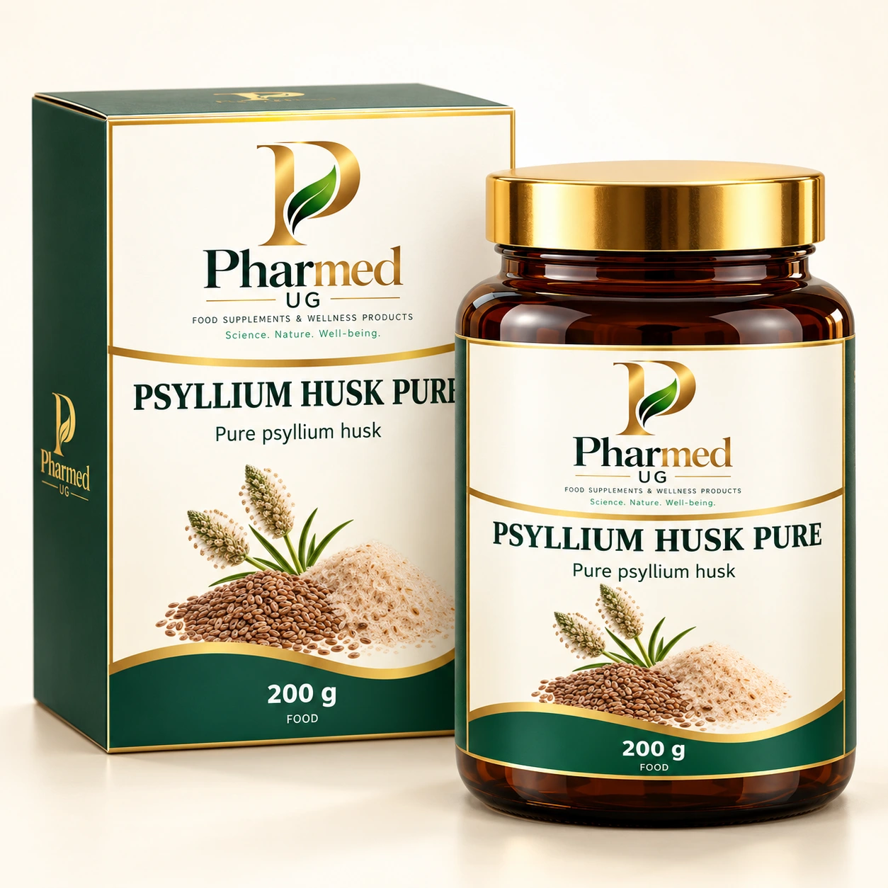
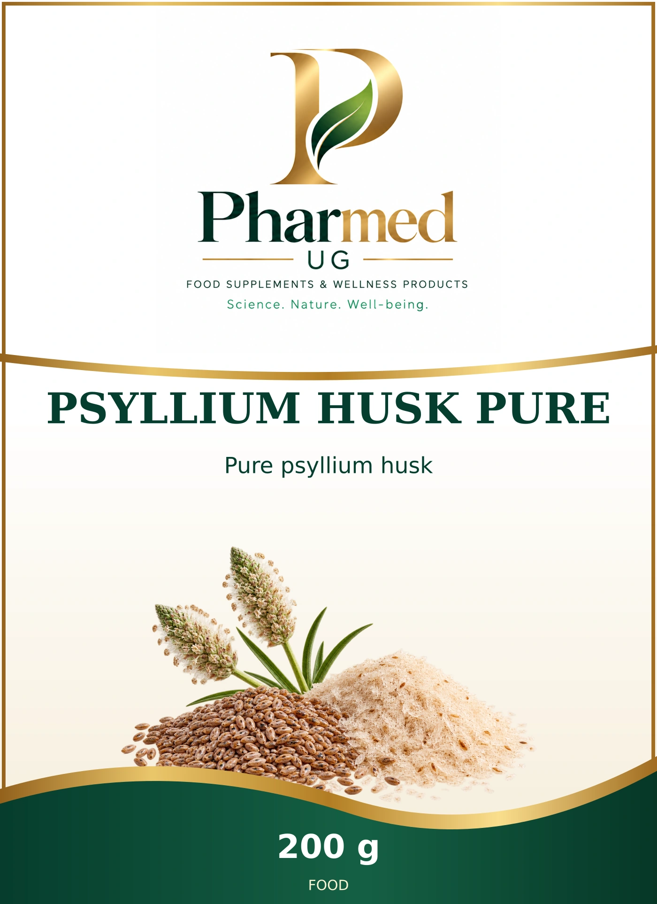

PSYLLIUM HUSK PURE
Pure psyllium husk
Pure psyllium husk. Sourced alternative formulation.
Complete selected ingredient declaration
Indian psyllium seed husks(Plantago ovata),single ingredient.
Published component amounts
| Component | Amount | Exact table basis |
|---|---|---|
| Energy | 772 kJ | 100g |
| Energy | 192 kcal | 100g |
| Fat | 0.5 g | 100g |
| Saturates | <0.1 g | 100g |
| Carbohydrate | 3 g | 100g |
| Sugars | <0.5 g | 100g |
| Fibre | 88 g | 100g |
| Protein | 1 g | 100g |
| Salt | 0.3 g | 100g |
| Energy | 46 kJ | 6g daily portion |
| Energy | 12 kcal | 6g daily portion |
| Fat | <0.5 g | 6g daily portion |
| Saturates | <0.1 g | 6g daily portion |
| Carbohydrate | <0.5 g | 6g daily portion |
| Sugars | <0.5 g | 6g daily portion |
| Fibre | 5.3 g | 6g daily portion |
| Protein | <0.5 g | 6g daily portion |
| Salt | 0.02 g | 6g daily portion |
| Psyllium husks | 100 % | product mass |
Each row retains its source basis. Amounts per tablet, daily portion, 100 g, 100 mL and prepared serving are distinct. “Not published” means undisclosed, not zero. Raw-material input masses and processing allowances require the manufacturer specification.
Reference directions & product information
Twice daily3g stirred into200mL water; let swell2minutes, drink, then1-2moreglasses liquid.
Reference formulation for private-label development; the final PHARMED directions follow the validated manufacturer specification.

The shared label design
This is the exact front artwork used in the catalogue and measured factory artwork. The three-dimensional packaging image illustrates its presentation.
Open the master front